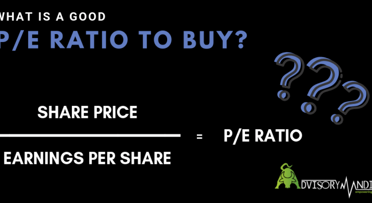

What is a Good P/E Ratio to Buy a Stock?
Many investors believe that it is a good idea to calculate the price-to-earnings (P/E) ratio of a company to buy a stock and make investment decisions.This is why it is one of the financial ratios commonly used while doing the fundamental analysis of stocks.In theoretical terms, it tells how much an investor is willing to pay per rupee of earnings for a company.For instance, if the value of P/E is 15 that suggest that one is willing to pay 15 in a stock rupee for every 1 rupee of earnings that the company generates over a year.
In order to calculate the price-to-earnings ratio, one has to divide the price per share from the company’s earnings per share for a 1-year period.
Price-to-earnings (P/E) = Price per share / Earnings per share (EPS)
So, a stock trading at 100 rupees per share with an earnings-per-share (EPS) of 10 rupees would have a P/E of 10.It clearly means that an investor would be paying 10 rupees to claim a mere 1 rupee of earnings.It seems like a bad deal but it can be mitigated.But the question still arises, what is the good P/E ratio to buy a stock?
In general, many investors consider the low P/E ratio a ‘reliable indicator’ to buy a stock.A low price-to-earnings ratio tells that an investor is paying less per rupee of company earnings and it will take less time for the company to earn sufficient enough to buy back its shares.But, it must be noted that the average P/E ratio tends to vary from industry to industry.The average P/E ratios of companies from the investor are comparing P/E ratios of two different companies, it is necessary to make sure both companies belong to the same industry with similar properties.Otherwise, he/she would end up with a portfolio full of utility stocks.But, if both companies belong to the same industry and you picked the stock with low P/E to invest in, then it would be a smart decision to buy undervalued stocks to achieve the long-term financial goals.
However, it is not necessary that the companies with high P/E ratio turn out to be bad.For example, let’s assume the same company mentioned earlier with a P/E ratio of 10 was widely expected to earn Rs 2 per share in the coming year.Rest assured, the company would have a P/E ratio of only 5 in one year’s time.It makes that company a good investment.
In a nutshell, we can say that P/E is a good metric to use while doing the fundamental analysis of a stock but one shouldn’t always rely on this financial ratio.There are other ways to analyze the performance of a company stock in the respective industry.
Nevertheless, if you have any query or would like to add something then don’t forget to mention in the comment section below.
Share on Facebook Tweet Follow us
Posted On: 2018-10-13T00:00:00
Posted By: Wasim Raza



Content Date: 2018-10-13
Download Date: 2021-07-09
Document ID: L0C04DX97